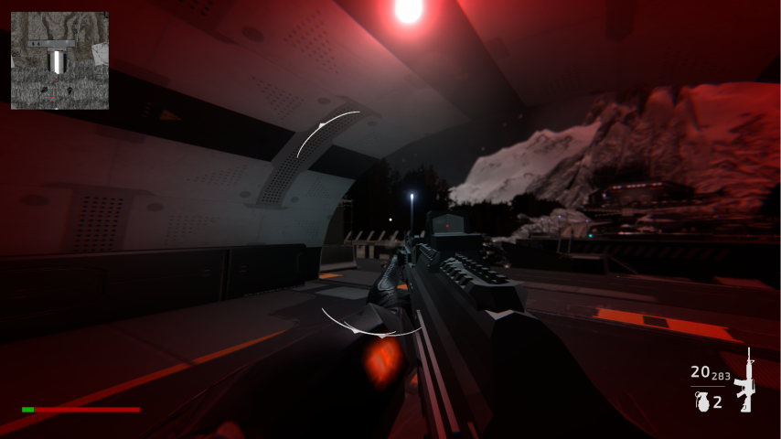
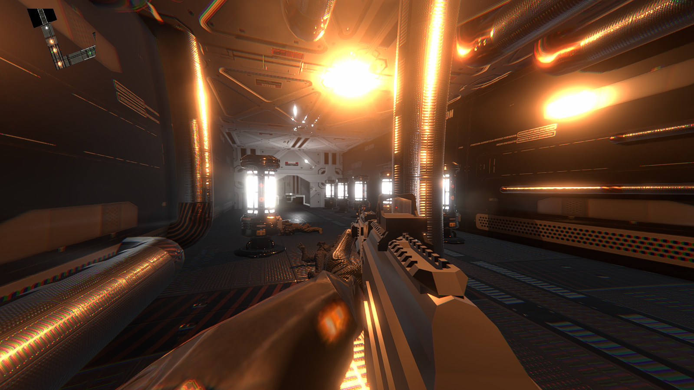
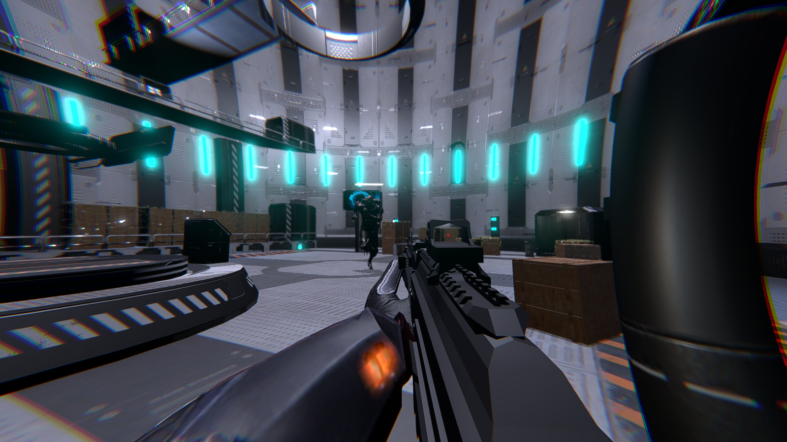

A single-player FPS where the player must infiltrate a heavily guarded military base to stop a rogue commander from weaponizing a time machine. The game features a 3-level campaign scaling from exterior breach to interior infiltration, culminating in a boss fight. Built in Unity, the core hook is a dynamic time-manipulation mechanic that allows the player to trigger slow-motion mid-combat for tactical advantages.
Key Contributions
Programmed a custom time-scale manipulation system, allowing seamless transitions into slow-motion combat without breaking physics or input registration.
Developed responsive first-person controller mechanics, including fluid movement, aiming, and weapon handling.
Designed and implemented AI behavior for enemy guards and a multi-stage boss encounter.
Structured a cohesive 3-act level progression (Exterior Base, Interior Facility, Time Machine Core).
Gallery

Level 1: Approaching the exterior perimeter of the military base.

Level 2: CQB combat and infiltration inside the facility.

Level 3: The final confrontation to secure the time machine.